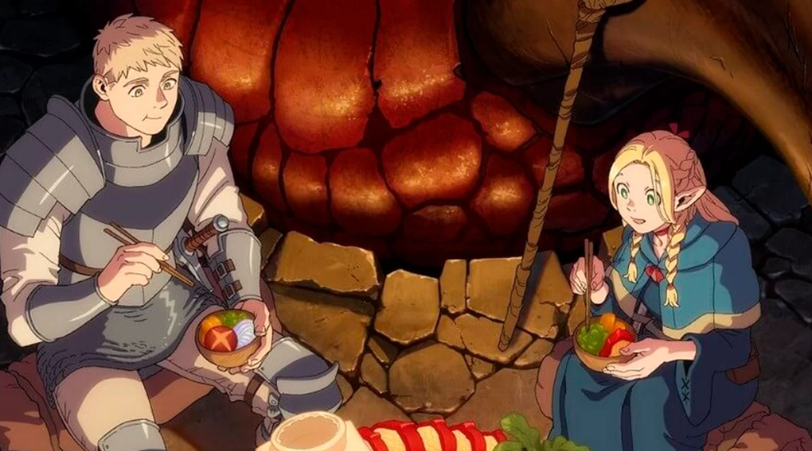

Review
Anime "Dungeon Meshi"
"Dungeon Meshi" é uma jornada fascinante pelos corredores perigosos e emocionantes de um mundo de fantasia, mas com um toque totalmente único. Este anime é uma verdadeira delícia para os fãs de fantasia e gastronomia, combinando de forma brilhante os elementos de exploração de masmorras com a arte culinária.

O que torna "Dungeon Meshi" tão especial é a sua abordagem original e divertida de explorar o mundo das masmorras. Em vez de focar apenas na aventura e batalhas, o anime mergulha profundamente na cultura alimentar do mundo fantástico, mostrando como os aventureiros se alimentam enquanto exploram os calabouços perigosos. Desde a captura dos ingredientes mais estranhos até a preparação de refeições saborosas, cada episódio é uma jornada emocionante que mantém os espectadores grudados na tela.
Os personagens cativantes e bem desenvolvidos são outro ponto alto de "Dungeon Meshi". Cada membro do grupo traz uma personalidade única para a mesa, e é emocionante ver como suas interações se desenrolam enquanto enfrentam desafios mortais e compartilham refeições reconfortantes. Além disso, a animação é lindamente feita, capturando tanto os momentos de ação intensa quanto os detalhes requintados das refeições preparadas pelos protagonistas.
Em suma, "Dungeon Meshi" é um verdadeiro banquete para os sentidos, combinando aventura, comédia e gastronomia de uma forma que é ao mesmo tempo original e deliciosamente envolvente. Se você é fã de anime e está procurando algo diferente e emocionante para assistir, este é definitivamente um prato que vale a pena saborear.